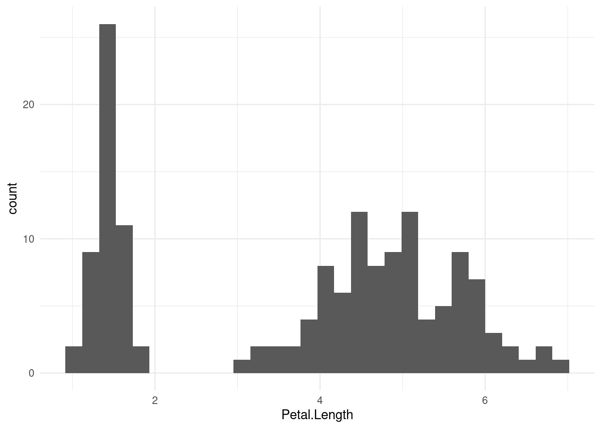
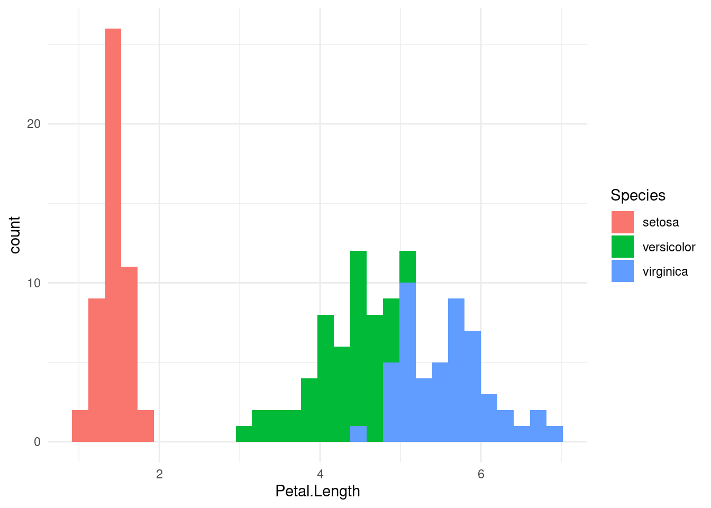
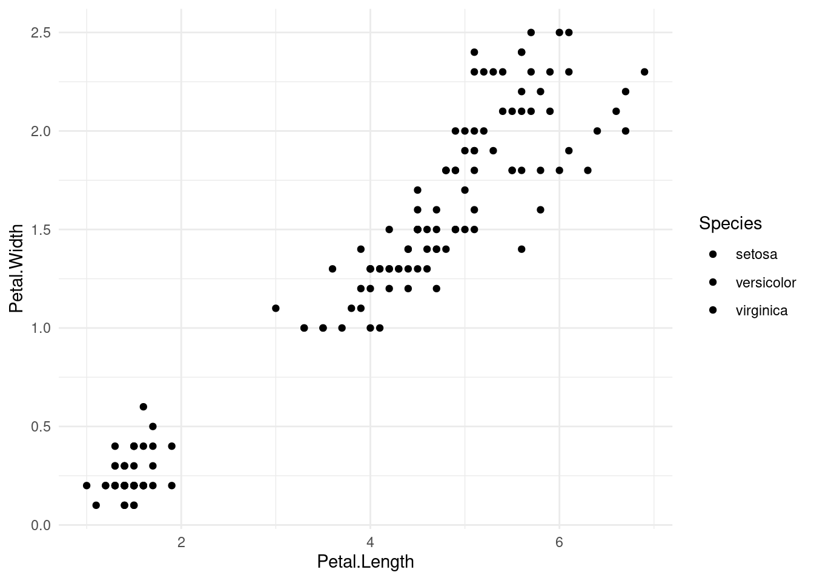
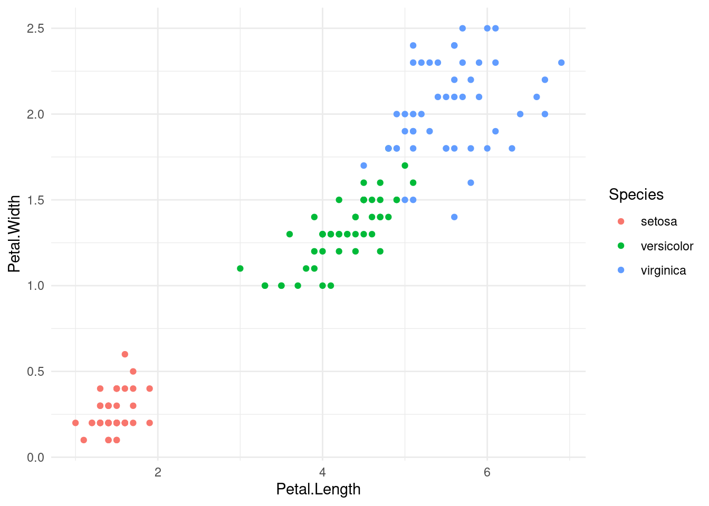
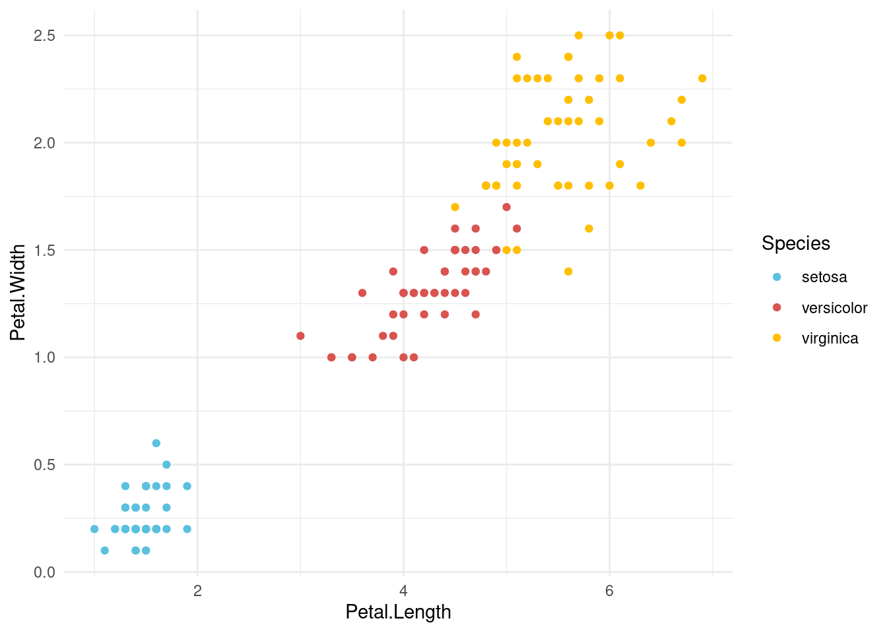
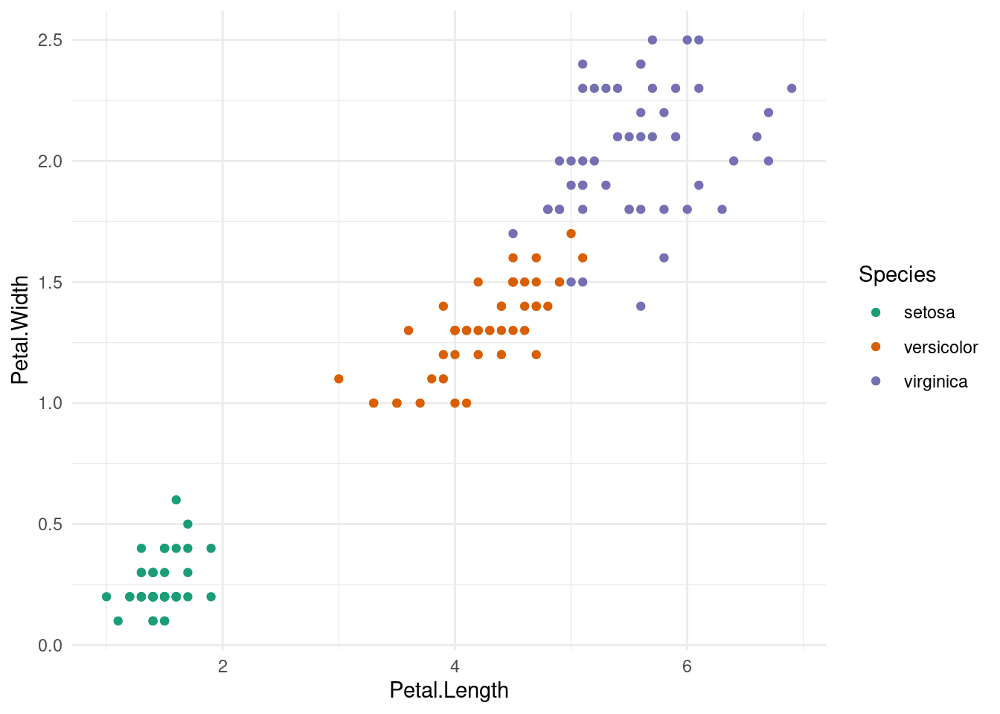
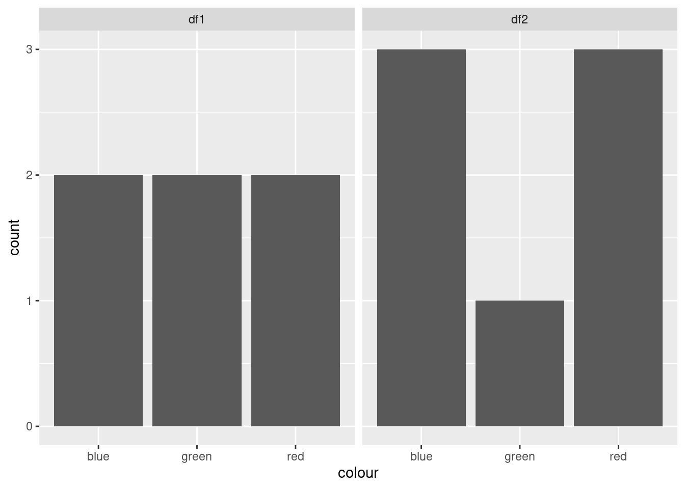
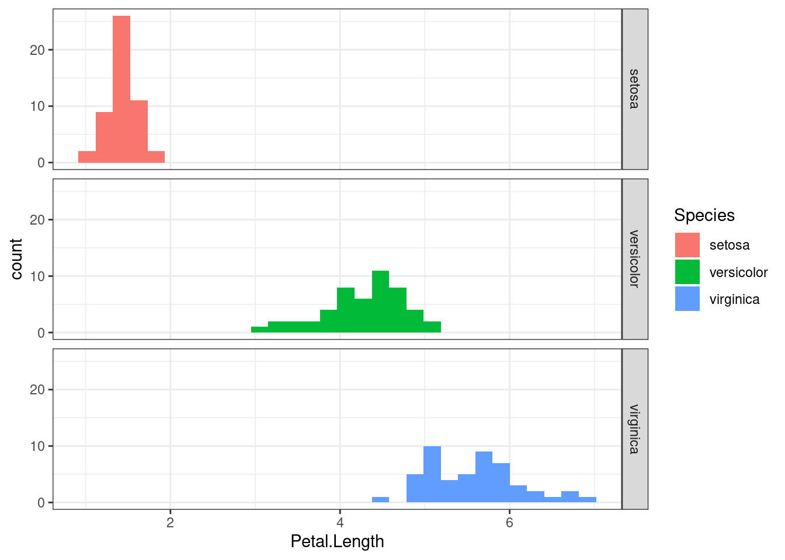

# Say we have a vector of categorical strings
sample_vector <- c("blue", "green", "blue", "red")
typeof(sample_vector)[1] "character"
DS202 - Data Science for Social Scientists
OBJECTIVE: Support with R programming skills
# Say we have a vector of categorical strings
sample_vector <- c("blue", "green", "blue", "red")
typeof(sample_vector)[1] "character"# Factor is a bult-in R feature
# This is best way of representing categorical variables
factor(sample_vector)[1] blue green blue red
Levels: blue green redas.integer(factor(sample_vector))[1] 1 2 1 3You can force an order:
factor(sample_vector, levels=c("red", "green", "blue"))[1] blue green blue red
Levels: red green blueas.integer(factor(sample_vector, levels=c("red", "green", "blue")))[1] 3 2 3 1categorical_vector <- factor(sample_vector, levels=c("red", "green", "blue"))
sum(categorical_vector == "blue")[1] 2They have the same length
Elements in the same index represents the same “day”
vector1 <- c("blue", "red", "green", "green", "blue", "red")
vector2 <- c("red", "red", "blue", "blue", "blue", "green")vector1 == vector2[1] FALSE TRUE FALSE FALSE TRUE FALSEvector1 == "blue"[1] TRUE FALSE FALSE FALSE TRUE FALSENow, put it all together:
output <- vector1 == "blue" & vector2 == "blue"
output[1] FALSE FALSE FALSE FALSE TRUE FALSEKeyword: Logical Operators
& stands for an AND operation
| stands for an OR operation
! stands for a NOT operation
Read more about it here
sum(output) # Count all occurences of TRUE in the vector[1] 1If I wanted to do it all in a single line:
sum(vector1 == "blue" & vector2 == "blue")[1] 1If I have the same info but now represented as a data frame, how would I count the number of blues in common?
# A random dataframe
df <- data.frame(colourA=c("blue", "red", "green", "green", "blue", "red"),
colourB=c("red", "red", "blue", "blue", "blue", "green"))
df colourA colourB
1 blue red
2 red red
3 green blue
4 green blue
5 blue blue
6 red greenYou can access each column by using the $:
df$colourA[1] "blue" "red" "green" "green" "blue" "red" sum(df$colourA == "blue" & df$colourB == "blue")[1] 1
# A random dataframe
df1 <- data.frame(observation=c(1, 2, 3, 4, 5, 6),
colour=c("blue", "red", "green", "green", "blue", "red"))
df1 observation colour
1 1 blue
2 2 red
3 3 green
4 4 green
5 5 blue
6 6 red# A random dataframe
df2 <- data.frame(observation=c(1, 2, 3, 4, 5, 5, 6),
colour=c("red", "red", "blue", "blue", "red", "blue", "green"))
df2 observation colour
1 1 red
2 2 red
3 3 blue
4 4 blue
5 5 red
6 5 blue
7 6 greenFirst, let’s calculate whether there was at least one “blue” in each observation.
library(tidyverse)── Attaching packages ─────────────────────────────────────── tidyverse 1.3.2 ──
✔ ggplot2 3.4.0 ✔ purrr 0.3.5
✔ tibble 3.1.8 ✔ dplyr 1.0.10
✔ tidyr 1.2.1 ✔ stringr 1.4.1
✔ readr 2.1.3 ✔ forcats 0.5.2
── Conflicts ────────────────────────────────────────── tidyverse_conflicts() ──
✖ dplyr::filter() masks stats::filter()
✖ dplyr::lag() masks stats::lag()select(df2, observation) observation
1 1
2 2
3 3
4 4
5 5
6 5
7 6The pipe
I could do exactly the same thing using the pipe %>%
df2 %>% select(observation) # no need to pass `df2` to function select observation
1 1
2 2
3 3
4 4
5 5
6 5
7 6tail(select(df2,observation),n=1) observation
7 6tail(
select(
df2,
observation),
n=1) observation
7 6df2 %>% select(observation) %>% tail(n=1) observation
7 6Check the idea of group_by (a tidyverse feature)
summarise and n() only works with groupings (group_by).
# How many colours are there, per observation?
df2 %>% group_by(observation) %>% summarise(count=n())# A tibble: 6 × 2
observation count
<dbl> <int>
1 1 1
2 2 1
3 3 1
4 4 1
5 5 2
6 6 1df2 have at least one colour “blue”?# How many colours are there, per observation?
df2 %>% group_by(observation) %>% summarise(has_blue=any(colour == "blue"))# A tibble: 6 × 2
observation has_blue
<dbl> <lgl>
1 1 FALSE
2 2 FALSE
3 3 TRUE
4 4 TRUE
5 5 TRUE
6 6 FALSE df1 have at least one colour “blue”?# How many colours are there, per observation?
df1 %>% group_by(observation) %>% summarise(has_blue=any(colour == "blue"))# A tibble: 6 × 2
observation has_blue
<dbl> <lgl>
1 1 TRUE
2 2 FALSE
3 3 FALSE
4 4 FALSE
5 5 TRUE
6 6 FALSE # Store those results into variables
df1_summary <-
df1 %>% group_by(observation) %>% summarise(has_blue=any(colour == "blue"))
df2_summary <-
df2 %>% group_by(observation) %>% summarise(has_blue=any(colour == "blue"))Both dataframes now have the same number of rows, representing the same “observations” and both have a column called has_blue. I can compare both like this:
sum(df1_summary$has_blue & df2_summary$has_blue)[1] 1Keyword: Logical Operators
& stands for an AND operation
| stands for an OR operation
! stands for a NOT operation
Read more about it here
Useful if the two dataframes are not aligned
output <- merge(df1, df2, by=c("observation", "colour"))
output observation colour
1 2 red
2 5 bluesum(output$colour == "blue")[1] 1mutates!# mutate adds a new column to a dataframe
df2 %>% mutate(is_blue=colour == "blue") observation colour is_blue
1 1 red FALSE
2 2 red FALSE
3 3 blue TRUE
4 4 blue TRUE
5 5 red FALSE
6 5 blue TRUE
7 6 green FALSENote: mutate will add a new column but it will NOT update the dataframe. If you want to re-use the new column, you have to save the new dataframe:
# df2 does not have a `is_blue` column
df2 observation colour
1 1 red
2 2 red
3 3 blue
4 4 blue
5 5 red
6 5 blue
7 6 greenIf I want to updated it to the SAME dataframe, I have to reassign it (using <-)
df2 <- df2 %>% mutate(is_blue=colour=="blue")
df2 observation colour is_blue
1 1 red FALSE
2 2 red FALSE
3 3 blue TRUE
4 4 blue TRUE
5 5 red FALSE
6 5 blue TRUE
7 6 green FALSEBy manual inspection:
table(df1$colour)
blue green red
2 2 2 table(df2$colour)
blue green red
3 1 3 I will use iris as an example:
library(datasets)
data(iris)
iris Sepal.Length Sepal.Width Petal.Length Petal.Width Species
1 5.1 3.5 1.4 0.2 setosa
2 4.9 3.0 1.4 0.2 setosa
3 4.7 3.2 1.3 0.2 setosa
4 4.6 3.1 1.5 0.2 setosa
5 5.0 3.6 1.4 0.2 setosa
6 5.4 3.9 1.7 0.4 setosa
7 4.6 3.4 1.4 0.3 setosa
8 5.0 3.4 1.5 0.2 setosa
9 4.4 2.9 1.4 0.2 setosa
10 4.9 3.1 1.5 0.1 setosa
11 5.4 3.7 1.5 0.2 setosa
12 4.8 3.4 1.6 0.2 setosa
13 4.8 3.0 1.4 0.1 setosa
14 4.3 3.0 1.1 0.1 setosa
15 5.8 4.0 1.2 0.2 setosa
16 5.7 4.4 1.5 0.4 setosa
17 5.4 3.9 1.3 0.4 setosa
18 5.1 3.5 1.4 0.3 setosa
19 5.7 3.8 1.7 0.3 setosa
20 5.1 3.8 1.5 0.3 setosa
21 5.4 3.4 1.7 0.2 setosa
22 5.1 3.7 1.5 0.4 setosa
23 4.6 3.6 1.0 0.2 setosa
24 5.1 3.3 1.7 0.5 setosa
25 4.8 3.4 1.9 0.2 setosa
26 5.0 3.0 1.6 0.2 setosa
27 5.0 3.4 1.6 0.4 setosa
28 5.2 3.5 1.5 0.2 setosa
29 5.2 3.4 1.4 0.2 setosa
30 4.7 3.2 1.6 0.2 setosa
31 4.8 3.1 1.6 0.2 setosa
32 5.4 3.4 1.5 0.4 setosa
33 5.2 4.1 1.5 0.1 setosa
34 5.5 4.2 1.4 0.2 setosa
35 4.9 3.1 1.5 0.2 setosa
36 5.0 3.2 1.2 0.2 setosa
37 5.5 3.5 1.3 0.2 setosa
38 4.9 3.6 1.4 0.1 setosa
39 4.4 3.0 1.3 0.2 setosa
40 5.1 3.4 1.5 0.2 setosa
41 5.0 3.5 1.3 0.3 setosa
42 4.5 2.3 1.3 0.3 setosa
43 4.4 3.2 1.3 0.2 setosa
44 5.0 3.5 1.6 0.6 setosa
45 5.1 3.8 1.9 0.4 setosa
46 4.8 3.0 1.4 0.3 setosa
47 5.1 3.8 1.6 0.2 setosa
48 4.6 3.2 1.4 0.2 setosa
49 5.3 3.7 1.5 0.2 setosa
50 5.0 3.3 1.4 0.2 setosa
51 7.0 3.2 4.7 1.4 versicolor
52 6.4 3.2 4.5 1.5 versicolor
53 6.9 3.1 4.9 1.5 versicolor
54 5.5 2.3 4.0 1.3 versicolor
55 6.5 2.8 4.6 1.5 versicolor
56 5.7 2.8 4.5 1.3 versicolor
57 6.3 3.3 4.7 1.6 versicolor
58 4.9 2.4 3.3 1.0 versicolor
59 6.6 2.9 4.6 1.3 versicolor
60 5.2 2.7 3.9 1.4 versicolor
61 5.0 2.0 3.5 1.0 versicolor
62 5.9 3.0 4.2 1.5 versicolor
63 6.0 2.2 4.0 1.0 versicolor
64 6.1 2.9 4.7 1.4 versicolor
65 5.6 2.9 3.6 1.3 versicolor
66 6.7 3.1 4.4 1.4 versicolor
67 5.6 3.0 4.5 1.5 versicolor
68 5.8 2.7 4.1 1.0 versicolor
69 6.2 2.2 4.5 1.5 versicolor
70 5.6 2.5 3.9 1.1 versicolor
71 5.9 3.2 4.8 1.8 versicolor
72 6.1 2.8 4.0 1.3 versicolor
73 6.3 2.5 4.9 1.5 versicolor
74 6.1 2.8 4.7 1.2 versicolor
75 6.4 2.9 4.3 1.3 versicolor
76 6.6 3.0 4.4 1.4 versicolor
77 6.8 2.8 4.8 1.4 versicolor
78 6.7 3.0 5.0 1.7 versicolor
79 6.0 2.9 4.5 1.5 versicolor
80 5.7 2.6 3.5 1.0 versicolor
81 5.5 2.4 3.8 1.1 versicolor
82 5.5 2.4 3.7 1.0 versicolor
83 5.8 2.7 3.9 1.2 versicolor
84 6.0 2.7 5.1 1.6 versicolor
85 5.4 3.0 4.5 1.5 versicolor
86 6.0 3.4 4.5 1.6 versicolor
87 6.7 3.1 4.7 1.5 versicolor
88 6.3 2.3 4.4 1.3 versicolor
89 5.6 3.0 4.1 1.3 versicolor
90 5.5 2.5 4.0 1.3 versicolor
91 5.5 2.6 4.4 1.2 versicolor
92 6.1 3.0 4.6 1.4 versicolor
93 5.8 2.6 4.0 1.2 versicolor
94 5.0 2.3 3.3 1.0 versicolor
95 5.6 2.7 4.2 1.3 versicolor
96 5.7 3.0 4.2 1.2 versicolor
97 5.7 2.9 4.2 1.3 versicolor
98 6.2 2.9 4.3 1.3 versicolor
99 5.1 2.5 3.0 1.1 versicolor
100 5.7 2.8 4.1 1.3 versicolor
101 6.3 3.3 6.0 2.5 virginica
102 5.8 2.7 5.1 1.9 virginica
103 7.1 3.0 5.9 2.1 virginica
104 6.3 2.9 5.6 1.8 virginica
105 6.5 3.0 5.8 2.2 virginica
106 7.6 3.0 6.6 2.1 virginica
107 4.9 2.5 4.5 1.7 virginica
108 7.3 2.9 6.3 1.8 virginica
109 6.7 2.5 5.8 1.8 virginica
110 7.2 3.6 6.1 2.5 virginica
111 6.5 3.2 5.1 2.0 virginica
112 6.4 2.7 5.3 1.9 virginica
113 6.8 3.0 5.5 2.1 virginica
114 5.7 2.5 5.0 2.0 virginica
115 5.8 2.8 5.1 2.4 virginica
116 6.4 3.2 5.3 2.3 virginica
117 6.5 3.0 5.5 1.8 virginica
118 7.7 3.8 6.7 2.2 virginica
119 7.7 2.6 6.9 2.3 virginica
120 6.0 2.2 5.0 1.5 virginica
121 6.9 3.2 5.7 2.3 virginica
122 5.6 2.8 4.9 2.0 virginica
123 7.7 2.8 6.7 2.0 virginica
124 6.3 2.7 4.9 1.8 virginica
125 6.7 3.3 5.7 2.1 virginica
126 7.2 3.2 6.0 1.8 virginica
127 6.2 2.8 4.8 1.8 virginica
128 6.1 3.0 4.9 1.8 virginica
129 6.4 2.8 5.6 2.1 virginica
130 7.2 3.0 5.8 1.6 virginica
131 7.4 2.8 6.1 1.9 virginica
132 7.9 3.8 6.4 2.0 virginica
133 6.4 2.8 5.6 2.2 virginica
134 6.3 2.8 5.1 1.5 virginica
135 6.1 2.6 5.6 1.4 virginica
136 7.7 3.0 6.1 2.3 virginica
137 6.3 3.4 5.6 2.4 virginica
138 6.4 3.1 5.5 1.8 virginica
139 6.0 3.0 4.8 1.8 virginica
140 6.9 3.1 5.4 2.1 virginica
141 6.7 3.1 5.6 2.4 virginica
142 6.9 3.1 5.1 2.3 virginica
143 5.8 2.7 5.1 1.9 virginica
144 6.8 3.2 5.9 2.3 virginica
145 6.7 3.3 5.7 2.5 virginica
146 6.7 3.0 5.2 2.3 virginica
147 6.3 2.5 5.0 1.9 virginica
148 6.5 3.0 5.2 2.0 virginica
149 6.2 3.4 5.4 2.3 virginica
150 5.9 3.0 5.1 1.8 virginicaGenerate a histogram of Petal.Length:
g <- (
ggplot(iris, aes(x=Petal.Length))
+ geom_histogram()
# Customize
+ theme_minimal()
)
g`stat_bin()` using `bins = 30`. Pick better value with `binwidth`.
How do I colour the histogram according to the Species?
g <- (
ggplot(iris, aes(x=Petal.Length, fill=Species))
+ geom_histogram()
# Customize
+ theme_minimal()
)
g`stat_bin()` using `bins = 30`. Pick better value with `binwidth`.
Each geom_ “listens” to a different set of aesthetics. (Check Chapter 3 of R for Data Science for more info)
For example, geom_point does not understand the fill :
g <- (
ggplot(iris, aes(x=Petal.Length, y=Petal.Width, fill=Species))
+ geom_point()
# Customize
+ theme_minimal()
)
g
g <- (
ggplot(iris, aes(x=Petal.Length, y=Petal.Width, colour=Species))
+ geom_point()
# Customize
+ theme_minimal()
)
g
my_favourite_colours = c("#5bc0de", "#d9534f", "#ffbf00")Places to find colours: https://www.color-hex.com/color-palettes/popular.php
g <- (
ggplot(iris, aes(x=Petal.Length, y=Petal.Width, colour=Species))
+ geom_point()
# Customize
+ theme_minimal()
+ scale_colour_manual(values=my_favourite_colours) # this is where you customize it
)
g
You can use built-in palettes, you just need to know their names/numbers.
Check the documentation https://ggplot2.tidyverse.org/reference/scale_brewer.html -> for the different settings
To understand which colour palettes are available, check: https://colorbrewer2.org/
g <- (
ggplot(iris, aes(x=Petal.Length, y=Petal.Width, colour=Species))
+ geom_point()
# Customize
+ theme_minimal()
+ scale_colour_brewer(type="qual", palette=2) # Bult-in palette of colours for the aesthetic `colour`, as given by the Colour Brewer
)
g
df1$source <- "df1"
df2$source <- "df2"ggplot(bind_rows(df1, df2), aes(x=colour)) +
geom_bar() + facet_wrap(~ source)
Useful when you want to plot two charts in the same image.
Observation: you might need to combine (append) the two dataframes first. Use the tidyverse function bind_rows (same as rbind)
g <- (
ggplot(iris, aes(x=Petal.Length, fill=Species))
+ geom_histogram()
# Customize
+ theme_bw()
+ scale_colour_manual(values=my_favourite_colours)
+ facet_grid(Species ~ .) #This is what does it
)
g`stat_bin()` using `bins = 30`. Pick better value with `binwidth`.
tidyversetidyverse is a set of R packages that have several functions and facilities for working with data. I find tidyverse more intuitive than base R, and there’s an entire book available for free online (R for Data Science) that contains a lot of helpful tutorials about tidyverse. Let me point to a few specific chapters: